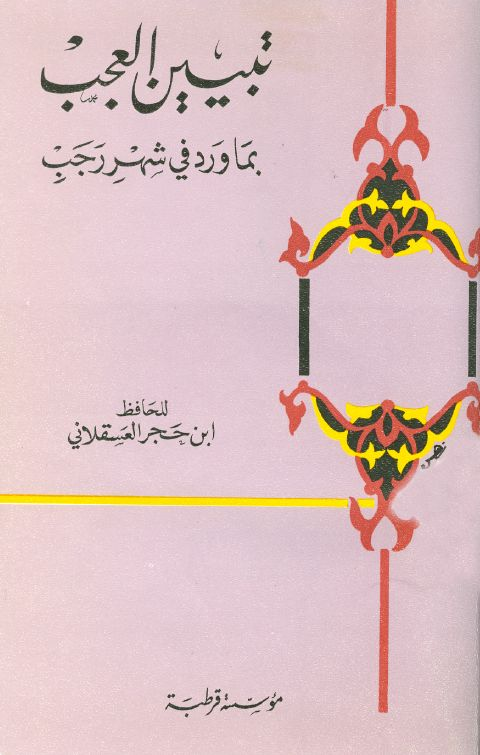

Downloads need an internet connection.
تبيين العجب بما ورد في شهر رجب- ت. عوض الله
Authors: أحمد بن علي بن حجر العسقلاني
Editors: طارق عوض الله أبو معاذ
Publishers: مؤسسة قرطبة
**▫️ العنوان: تبيين العجب بما ورد في شهر رجب- ت. عوض الله** ▪️ المؤلف: #أحمد_بن_علي_بن_حجر_العسقلاني ▫️ المحقق: #طارق_بن_عوض_الله_أبو_معاذ ▪️ الناشر: #مؤسسة_قرطبة ▫️ بلد النشر: الجيزة، #مصر ▪️ الطبعة: 1 ▫️ عدد الأجزاء: 1 ▪️ الصفحات: 92 ▫️ نوع الوعاء: #كتاب ▪️ التصنيف الرئيسي: #الحديث_وعلومه ▫️ التصنيف الفرعي: #بحوث_حديثية ۪